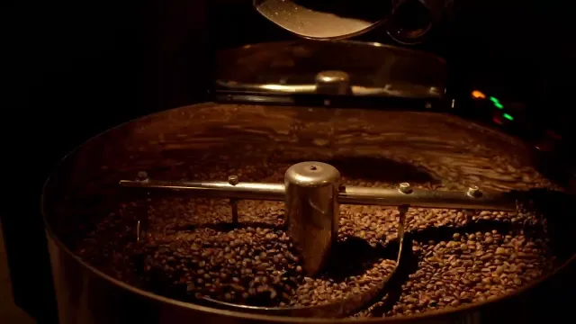

MAKE Studios · Berlin
Wir machen Sie sichtbar. Website, Google-Profil, Video und Social Media für Betriebe in Berlin
Wir kümmern uns um alles, was Ihre Kundschaft von Ihnen sieht, bevor sie anruft.

Für wen
Jeder Betrieb ist anders.
Die Aufgabe bleibt: mehr Anfragen.


Analyse
Die erste Begegnung
findet online statt.
97 %
der Befragten lesen Online-Bewertungen zu lokalen Unternehmen.
BrightLocal, Local Consumer Review Survey 2026 · USA

2,7 ×
höher ist die Wahrscheinlichkeit, dass ein Unternehmen mit vollständigem Google-Profil als seriös gilt.
Google, Hilfe zum Unternehmensprofil · Herstellerangabe
Zahlen aus drei Branchen
Wo Ihre Kundschaft sucht.
Und was sie dort sehen muss.
Allein in Berlin werben Tausende Betriebe um dieselbe Kundschaft.
1.022Cafés
1.551Maklerbüros
1.441Werbeagenturen
Amt für Statistik Berlin-Brandenburg, Umsatzsteuerstatistik 2024 · umsatzsteuerpflichtige Unternehmen
01 · Cafés & Restaurants
53 %
der Befragten sehen sich die Speisekarte vor dem Besuch online an. Bei den 16- bis 29-Jährigen sind es 65 Prozent.
Bitkom, Umfrage Juni 2024 · Deutschland
- Speisekarte und Öffnungszeiten aktuell bei Google
- Fotos Ihrer Gerichte
- Reels aus Küche und Gastraum

02 · Agenturen
94 %
der B2B-Einkäufer haben ihre Wunschanbieter gereiht, bevor sie mit einem sprechen. 77 Prozent kaufen am Ende genau dort.
6sense, Buyer Experience Report 2025 · international
- Fallbeispiele mit Ergebnis
- Ein Showreel statt langer Texte
- Kurzer Weg zur Anfrage

03 · Immobilien
87 %
der Menschen auf Wohnungs- oder Haussuche nutzen digitale Kanäle. 96 Prozent legen Wert auf aussagekräftige Fotos.
Bitkom, Umfragen 2025 und 2021 · Deutschland
- Ein Video-Rundgang je Objekt
- Eine eigene Seite für Eigentümer
- Bewertungen, die man bei Google findet

Ergebnis
Acht Seiten, fertig gebaut.
Beispielseiten für erfundene Betriebe


- 01/08
Café · Rösterei
Lohe Kaffeerösterei
Röstfilm · 3D-Becher · Bon vorbestellen
- 02/08
Coaching · Beratung
Fermate
Person im Mittelpunkt · Szene Die Pause · Kennenlernen
- 03/08
Neubau · Bauträger
Hellgrund
Film beim Scrollen · Rundgang · Terminanfrage
- 04/08
Agentur · Marken
Passer
Showreel · Vier Druckplatten · Beispielprojekte
- 05/08
Frühstück · Bistro
Kerbel
Auftaktfilm · Tag im Fenster · Tischanfrage
- 06/08
Dach · Sanierung
Firstlinie Dach & Sanierung
Details am Foto · Schnitt · Dachcheck
- 07/08
Kanzlei · Recht
Wortlaut
Anlässe · Klartext-Szene · Anfrage mit Vorauswahl
- 08/08
Bauunternehmen
Lotwerk Bau
Baustellen-Film · 5 Schritte · Anfrage
Kontakt
Lassen Sie uns sprechen.
Erzählen Sie uns von Ihrem Betrieb. Wir schauen uns Ihren heutigen Auftritt an und sagen Ihnen, wo Anfragen verloren gehen.
Leistungen
Ein Auftritt aus vier Teilen.
Wer Sie sucht, findet zuerst Ihr Google-Profil, sieht sich Bilder an, liest auf Ihrer Website nach und folgt Ihnen vielleicht bei Instagram. Wir sorgen dafür, dass es überall zusammenpasst.
Website
Zuerst fürs Handy gebaut, mit kurzer Ladezeit und allem, was Ihre Kundschaft vor der Anfrage wissen will.
- Cafés
- Speisekarte als Text, Fotos, Reservierung
- Agenturen
- Fallbeispiele, Team, Projektanfrage
- Immobilien
- Objektseiten, Seite für Eigentümer
Gestaltung und Texte gehören dazu, ebenso das Gerüst für Impressum und Datenschutz.
Entwürfe und BeispielseitenSichtbarkeit bei Google
Sie tauchen dort auf, wo gesucht wird: in der Google-Suche und auf der Karte, mit vollständigem Profil und Bewertungen.
- Cafés
- Google-Profil mit Karte, Fotos, Öffnungszeiten
- Agenturen
- Google-Profil mit Leistungen und Bildern Ihrer Arbeit
- Immobilien
- Google-Profil, Bewertungen von Kundschaft und Eigentümern
Bewertungen sammeln und beantworten gehört immer dazu.
Sichtbarkeits-Check machenVideo & Foto
Wir fotografieren und drehen bei Ihnen vor Ort in Berlin. Erklärvideo und Videostory entstehen auch ganz ohne Kamera.
- Cafés
- Reels aus Küche und Gastraum, Fotos der Gerichte
- Agenturen
- Showreel, Porträts, Blick hinter die Kulissen
- Immobilien
- Video-Rundgang, Objektfotos
Geschnitten wird in den Formaten für Website, Profil und Instagram.
Mit Kamera oder ohneSocial Media
Wir planen und schreiben Ihre Beiträge, schneiden Reels und antworten in Ihrem Namen auf Kommentare und Nachrichten.
- Cafés
- Neues von der Karte, Reels aus der Küche
- Agenturen
- Ihre Arbeiten als Beiträge, auch bei LinkedIn
- Immobilien
- Neue Objekte als Kurzvideo
Auf Anfrage. Den Umfang legen wir im Erstgespräch fest.
Die drei BausteineWebsite · Entwürfe
So könnte Ihre Website aussehen.
Drei Entwürfe: für ein Café, eine Agentur und ein Maklerbüro.
01 · Cafés & Restaurants
Gefunden, bevor der Hunger entscheidet.
Gäste entscheiden auf dem Handy, oft unterwegs und in wenigen Sekunden. Sie wollen Karte, Fotos und Öffnungszeiten sehen, bevor sie kommen.
Wir bauen eine Seite, die zuerst auf dem Handy funktioniert: Speisekarte als Text statt PDF, Fotos aus Ihrem Haus, Route und Reservierung mit einem Tipp. Dazu kommt ein vollständiges Google-Profil.
Im Google-Profil sehen Sie danach, wie oft angerufen, nach der Route gefragt oder Ihre Website geöffnet wurde.
02 · Agenturen
Auf der Liste, bevor das Gespräch beginnt.
Auftraggeber wissen meist schon, wen sie fragen, bevor sie zum ersten Mal mit jemandem sprechen. Ihr Auftritt muss diese Vorauswahl bestehen.
Deshalb steht Ihre Arbeit vorn: Fallbeispiele mit Ausgangslage, Idee und Ergebnis, ein Showreel statt langer Texte, Ihr Team mit Gesicht. Zur Anfrage ist es von dort ein kurzer Weg.
Später sehen Sie, welche Fallbeispiele aufgerufen werden und über welche Seite Anfragen hereinkommen.
03 · Immobilien
Besichtigt wird zuerst am Bildschirm.
Die Suche beginnt digital, und Fotos entscheiden über die Besichtigung. Eigentümer und Eigentümergemeinschaften prüfen Ihr Büro online, bevor sie anrufen.
Sie bekommen Objektseiten mit Fotos und Video-Rundgang und eine eigene Seite für Eigentümer mit Anfrage zur Wertermittlung. Für Hausverwaltungen bauen wir einen Auftritt, der Beiräten zeigt, wie Sie arbeiten.
Sie sehen, wie oft ein Video-Rundgang abgespielt wird und wie viele Eigentümer über die Seite anfragen.
Website · Beispielseiten
Ganze Seiten, zum Durchklicken.
Acht fertige Seiten für erfundene Betriebe, vom Café bis zur Kanzlei. Jede lässt sich öffnen und bedienen.
Café · Rösterei
Lohe Kaffeerösterei
Eine Rösterei mit Röstfilm: Beim Scrollen fallen die Bohnen aus der Trommel und drehen im Kühlsieb. Becher und Tüte lassen sich in 3D ansehen, die Vorbestellung kommt als Bon aus dem Drucker.
- Röstfilm
- 3D-Becher
- Bon vorbestellen
Coaching · Beratung
Fermate
Coaching für Führungskräfte auf einer ruhigen Seite mit großer Schrift. Aus vielen schwebenden Gedanken wird eine einzige Frage. Danach lässt sich ein Kennenlernen anfragen.
- Person im Mittelpunkt
- Szene Die Pause
- Kennenlernen
Neubau · Bauträger
Hellgrund
Ein Bauträger stellt sein Wohnprojekt vor. Beim Scrollen läuft ein Film vom Haus bis in die Räume, danach folgen die Eckdaten, ein Rundgang in drei Einstellungen und die Terminanfrage für die Besichtigung.
- Film beim Scrollen
- Rundgang
- Terminanfrage
Agentur · Marken
Passer
Ein Büro für Marken. Die Wortmarke springt aus drei Druckfarben in den Passer, der Werkstattfilm wächst beim Scrollen auf volle Größe, und drei Beispielprojekte liegen als Bogenstapel bereit.
- Showreel
- Vier Druckplatten
- Beispielprojekte
Frühstück · Bistro
Kerbel
Ein Frühstückslokal mit Film vom Frühstückstisch. Im Bogenfenster vergeht beim Scrollen ein ganzer Tag, von 8 bis 17 Uhr. Die Karte hat Bilder und Filter, der Tisch wird gleich angefragt.
- Auftaktfilm
- Tag im Fenster
- Tischanfrage
Dach · Sanierung
Firstlinie Dach & Sanierung
Ein Dachdecker erklärt seine Arbeit am Foto: Sechs Markierungen folgen dem Wasser vom First bis zum Fallrohr, ein Schnitt zeigt die Sanierung. Wer unsicher ist, fragt den Dachcheck an.
- Details am Foto
- Schnitt
- Dachcheck
Kanzlei · Recht
Wortlaut
Eine Kanzlei für Arbeits- und Wirtschaftsrecht, gesetzt wie ein guter Schriftsatz: Randnummern, feine Linien, große Serifen. In einer Szene wird ein Vertragssatz durchgestrichen und in Klartext übersetzt.
- Anlässe
- Klartext-Szene
- Anfrage mit Vorauswahl
Bauunternehmen
Lotwerk Bau
Ein Bauunternehmen, das schlüsselfertig baut. Die Seite ordnet Projekte nach Bereichen, zeigt einen kurzen Film von der Baustelle und den Ablauf in fünf Schritten bis zur Übergabe. Am Ende steht die Projektanfrage.
- Baustellen-Film
- 5 Schritte
- Anfrage
Bilder und Filme sind Beispielmaterial. Alle acht Seiten im Einzelnen
Ihr Betrieb als nächste Seite?
Erstgespräch buchenVideo & Foto
Mit Kamera oder ohne.
Wir drehen und fotografieren bei Ihnen in Berlin. Und wenn niemand vor die Kamera möchte, entsteht Ihr Video aus einem Skript, Ihrem Material und KI-Szenen.
Weg 1
Dreh vor Ort
Wir kommen mit der Kamera zu Ihnen: in den Gastraum, auf die Baustelle, ins Büro. Geschnitten wird für Website, Google-Profil und Instagram.
- Reelsaus Küche, Gastraum oder Werkstatt
- Showreel oder ImagefilmIhre Arbeit in einem Film
- Porträtsvon Ihnen und Ihrem Team
- Objektvideomit Rundgang durch die Räume
- Fotosvon Gerichten, Räumen und Objekten
Die Filme sind Beispielmaterial.
Weg 2
Ohne Kamera
Niemand muss vor die Kamera. Ihr Video entsteht aus einem Skript, KI-Szenen und Ihrem eigenen Material, in Ihrem Erscheinungsbild.
- 01 · SkriptSie geben es frei, bevor Bilder entstehen.
- 02 · BilderKI-Szenen und Ihr Material, dazu eine KI-Stimme.
- 03 · VideoFertig in 16:9, 9:16 und 1:1, mit Untertiteln.
Erklärvideo
Ihr Angebot in 60 bis 90 Sekunden erklärt.
Lieferzeit 10 Werktage
Videostory
Die Geschichte Ihrer Firma: warum es Sie gibt und wofür Sie stehen. Auf Wunsch sprechen Sie selbst.
Lieferzeit 15 Werktage
Video-Serie
Neue Videos nach Redaktionsplan, ohne dass Sie planen oder schneiden müssen.
2 Videos im Monat
- Untertitel
- Lizenzfreie Musik
- KI-Kennzeichnung, wo nötig
Gute Betriebe gibt es viele. Gewählt wird, wen man zuerst sieht.
Analysen
Was die Zahlen sagen.
Zahlen aus Gastronomie, Agenturen und Immobilien, jede mit Quelle.
01
Cafés & Restaurants
Die Wahl fällt auf dem Handy. Speisekarte, Öffnungszeiten und Fotos müssen dort stimmen, wo gesucht wird.
1.022 Cafés und 3.767 Restaurants mit Bedienung in Berlin
53 %
der Befragten sehen sich die Speisekarte vor dem Besuch online an. Bei den 16- bis 29-Jährigen sind es 65 Prozent.
Bitkom, Juni 2024 · Deutschland
69 %
erwarten Fotos, wenn sie sich ein Café oder Restaurant online ansehen.
Bitkom, Juni 2024 · Deutschland
42 %
sind schon einmal wegen eines Beitrags in sozialen Medien in ein Café oder Restaurant gegangen.
Bitkom, Juni 2024 · Deutschland
47 %
reservieren am liebsten online.
Bitkom, Juni 2024 · Deutschland
02
Agenturen
Ihr Auftritt verkauft, bevor Sie sprechen. Fallbeispiele und ein stimmiges Bild entscheiden, ob Sie auf die Liste kommen.
1.441 Werbeagenturen in Berlin
94 %
der B2B-Einkäufer haben ihre Wunschanbieter gereiht, bevor sie zum ersten Mal mit einem sprechen.
6sense, Buyer Experience Report 2025 · international
77 %
kaufen am Ende bei genau diesem frühen Favoriten.
6sense, Buyer Experience Report 2025 · international
61 %
der B2B-Einkäufer würden am liebsten ganz ohne Vertriebsgespräch entscheiden.
Gartner, Juni 2025 · international
69 %
bemerken Widersprüche zwischen dem, was die Website sagt, und dem, was der Vertrieb erzählt.
Gartner, Juni 2025 · international
03
Immobilien
Bilder und Video sind die erste Besichtigung. Und Eigentümer prüfen Sie online, bevor sie anrufen.
1.551 Maklerbüros und 2.054 Hausverwaltungen in Berlin
87 %
der Menschen auf Wohnungs- oder Haussuche nutzen dafür digitale Kanäle.
Bitkom, Oktober 2025 · Deutschland
96 %
legen Wert auf aussagekräftige Fotos des Objekts.
Bitkom, November 2021 · Deutschland · älter
+40 %
mehr Kontaktanfragen bei Angeboten mit Video-Besichtigung, laut ImmoScout24.
ImmoScout24, April 2020 · Deutschland · älter
74 %
der Eigentümer wünschen sich eine kostenlose Bewertung, bevor sie einen Makler wählen.
ImmoScout24, Mai 2024 · Deutschland
04
Für alle
Bewertungen und ein vollständiges Google-Profil sind die Grundlage, in jeder Branche.
97 %
der Befragten lesen Online-Bewertungen zu lokalen Unternehmen.
68 %
kommen nur für Unternehmen mit mindestens vier Sternen in Frage.
2,7 ×
höher ist die Wahrscheinlichkeit, dass Kundschaft ein Unternehmen mit vollständigem Profil für seriös hält.
Google, Hilfe zum Unternehmensprofil · Herstellerangabe
+70 %
höher ist die Wahrscheinlichkeit eines Besuchs, wenn das Profil vollständig ist.
Google, Hilfe zum Unternehmensprofil · Herstellerangabe
Stand: November 2026. Betriebe in Berlin: Amt für Statistik Berlin-Brandenburg, Umsatzsteuerstatistik 2024, Unternehmen mit mehr als 22.000 Euro Jahresumsatz.
Sichtbarkeits-Check
Wie gut findet man Sie?
Acht kurze Fragen zu Ihrem Auftritt. Sie sehen sofort, wo Sie stehen und wo Ihr größter Hebel liegt.
- Zwei Minuten
- Ohne Anmeldung
- Nichts wird gespeichert
Acht Fragen, zum Beispiel
- Ist Ihr Google-Profil bestätigt und vollständig?
- Antworten Sie auf Bewertungen?
- Lässt sich Ihre Website am Handy gut bedienen?
- Zeigen Sie eigene Fotos statt Bildern aus Datenbanken?
Ablauf
Sechs Schritte bis sichtbar.
- 01
Briefing
Sie erzählen uns vor Ort, was Ihren Betrieb ausmacht.
Wir sehen uns an, wie man Sie heute online findet.
- 02
Design
Wir entwerfen die Website zuerst fürs Handy und schreiben fürs Video das Skript.
Sie sehen beides, bevor gebaut oder produziert wird.
- 03
Feedback
Sie sagen uns, was fehlt oder anders sein soll.
Wir arbeiten es ein.
- 04
Umsetzung
Wir bauen die Seite, richten das Google-Profil ein, drehen, schneiden und bereiten Beiträge vor.
Sie geben uns die Zugänge und einen Termin für den Dreh.
- 05
Abnahme
Sie prüfen alles in Ruhe.
Wir veröffentlichen erst mit Ihrem Okay.
- 06
Live
Wir schalten frei und prüfen, ob man Sie findet.
Sie sehen, über welche Wege Kundschaft zu Ihnen kommt.
Video-Serie und Social Media laufen danach weiter, nach Redaktionsplan.
Fragen
Häufige Fragen.
Was bekomme ich bei MAKE Studios?
Eine Website, ein gepflegtes Google-Profil, Video und Fotos und auf Anfrage die Betreuung Ihrer Kanäle in den sozialen Medien. Sie können alles zusammen beauftragen oder nur einen Teil.
Für welche Betriebe arbeiten Sie?
Für Betriebe und Dienstleister in Berlin, die online gefunden werden wollen: Cafés und Restaurants, Handwerk und Bau, Makler und Hausverwaltungen, Beratung und Coaching, Agenturen und Kanzleien.
Sind die Beispielseiten echte Kunden?
Nein. Die acht Betriebe sind erfunden, die Seiten aber vollständig gebaut. Sie können jede öffnen und bedienen.
Warum ist ein vollständiges Google-Profil wichtig?
Laut Google ist die Wahrscheinlichkeit 2,7-mal höher, dass Kundschaft ein Unternehmen mit vollständigem Profil für seriös hält, und die Wahrscheinlichkeit eines Besuchs ist 70 Prozent höher. Quelle: Google, Hilfe zum Unternehmensprofil, Herstellerangabe.
Wie läuft ein Projekt ab?
In sechs Schritten: Briefing vor Ort, Design, Feedback, Umsetzung, Abnahme, Live. Sie sehen Entwurf oder Skript, bevor wir bauen oder produzieren, und online geht alles erst mit Ihrem Okay.
Was kostet das?
Das hängt vom Umfang ab. Nach dem Erstgespräch bekommen Sie einen Festpreis, schriftlich und bevor wir anfangen. Die Startpreise für Websites und Videos können Sie vorab einsehen, Social Media bieten wir auf Anfrage an: Preise ansehen
Kommen Sie zu uns?
Ja. Wir sitzen in Berlin und lernen Ihren Betrieb am liebsten vor Ort kennen. In der Gastronomie gern nachmittags, außerhalb des Mittags- und Abendgeschäfts.
Kann ich nur Video buchen?
Ja. Jede Leistung gibt es einzeln: nur Video, nur das Google-Profil, nur die Website oder nur Social Media. Am meisten bringt es, wenn alles zusammenpasst.
Muss ich vor die Kamera?
Nein. Erklärvideo, Videostory und Video-Serie entstehen ganz ohne Dreh: mit KI-Szenen, Ihrem Material und einer KI-Stimme. Bei Videostory und Video-Serie können Sie auch selbst sprechen.
Arbeiten Sie bei Videos mit KI?
Ja, bei den Videos ohne Kamera. Sie geben zuerst das Skript frei, dann entstehen die Bilder aus KI-Szenen und Ihrem Material. Wo es nötig ist, kennzeichnen wir das Video als KI-erstellt.
Was gehört zu Social Media bei Ihnen?
Drei Bausteine: Redaktionsplan und Beiträge, Reels und Kurzvideos sowie das Beantworten von Kommentaren und Nachrichten in Ihrem Namen. Ein festes Paket gibt es nicht, den Umfang legen wir im Erstgespräch fest.
Was brauchen Sie von uns?
Ein Gespräch vor Ort, Ihr Logo, Zugang zu Ihrem Google-Profil und einen Termin für Fotos und Video. Die Texte schreiben wir gern aus dem Gespräch. Für Social Media kommen die Zugänge zu Ihren Kanälen dazu.
Wer steht hinter MAKE Studios?
MAKE Studios ist eine Marke von MAKE Innovation aus Berlin. Alle Angaben finden Sie im Impressum.
Und wenn die Anfragen kommen?

MAKE Revenue
Die Anfragen kommen, aber es wird zu selten ein Auftrag daraus? Dafür gibt es MAKE Revenue: Vertrieb mit System, vom ersten Gespräch bis zum Abschluss.
Zu MAKE RevenueMAKE Innovation
Mehr Aufträge bringen mehr Arbeit ins Büro: Angebote, Termine, Rechnungen. MAKE Innovation führt KI, bessere Abläufe und eigene Software in Unternehmen ein, damit das nicht an Ihnen hängen bleibt.
Zu MAKE InnovationKontakt
Bereit, gesehen zu werden?
Buchen Sie ein Erstgespräch oder schreiben Sie uns ein paar Zeilen. Wir melden uns persönlich.
Erst den Sichtbarkeits-Check machen
Social Media · auf Anfrage
Und wer kümmert sich um Instagram?
Wir, wenn Sie möchten. Auch um LinkedIn und TikTok. Wie viel wir übernehmen, legen wir im Erstgespräch fest.
- 01
- 02
- 03
Social Media anfragenRedaktionsplan und Beiträge
Wir planen, was wann erscheint, und liefern Texte und Bilder für Ihre Kanäle.
Reels und Kurzvideos
Wir drehen und schneiden für Instagram, TikTok und LinkedIn.
Kommentare und Nachrichten
Wir antworten in Ihrem Namen. Ton und Grenzen stimmen wir vorher mit Ihnen ab.
Reel
Redaktionsplan
Beitrag

Hausröstung Nº 07: ganze Bohne, 250 g. Mahlgrad nach Wunsch.
Kommentar und Antwort
Wann röstet ihr wieder?
Jeden Donnerstag. Ein paar Tage später steht die Röstung bei uns im Regal.